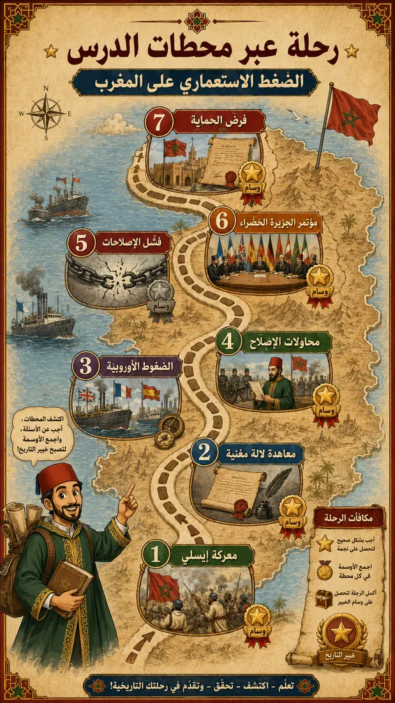
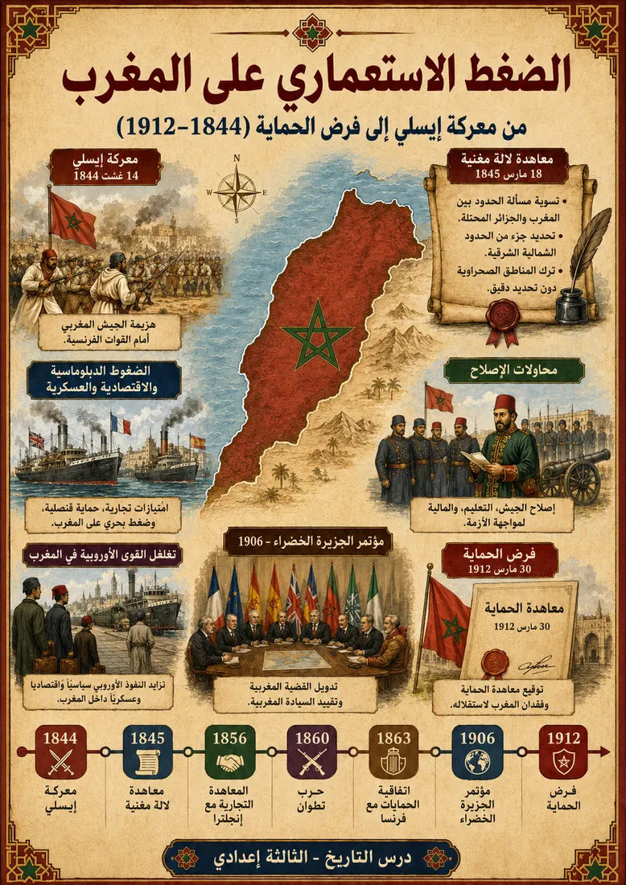
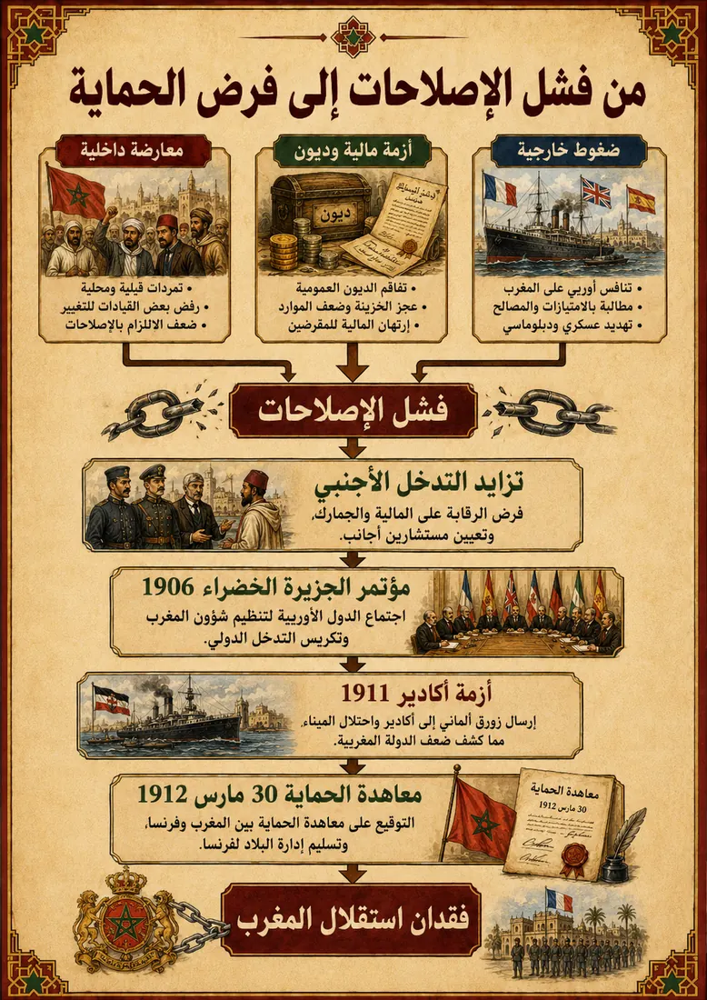
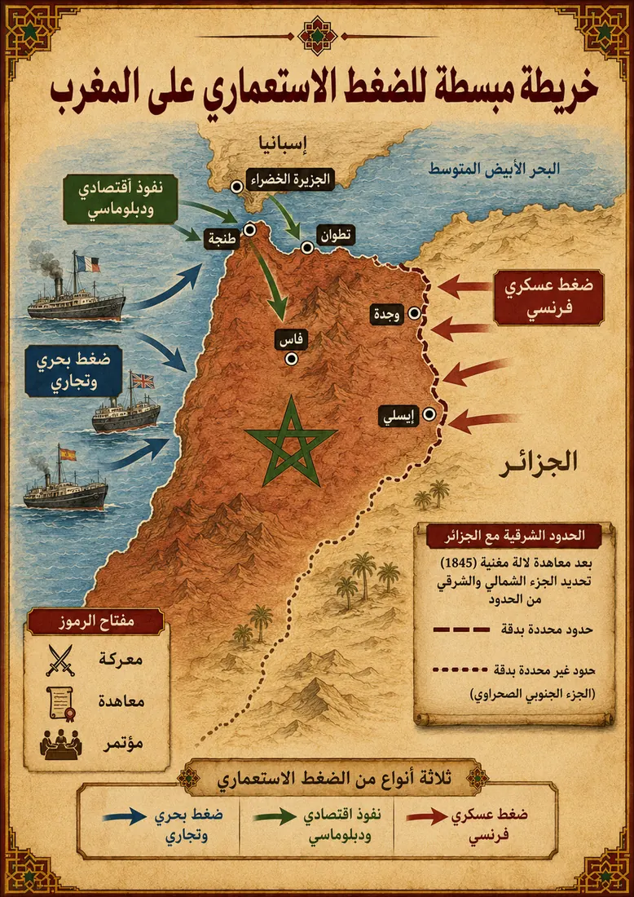
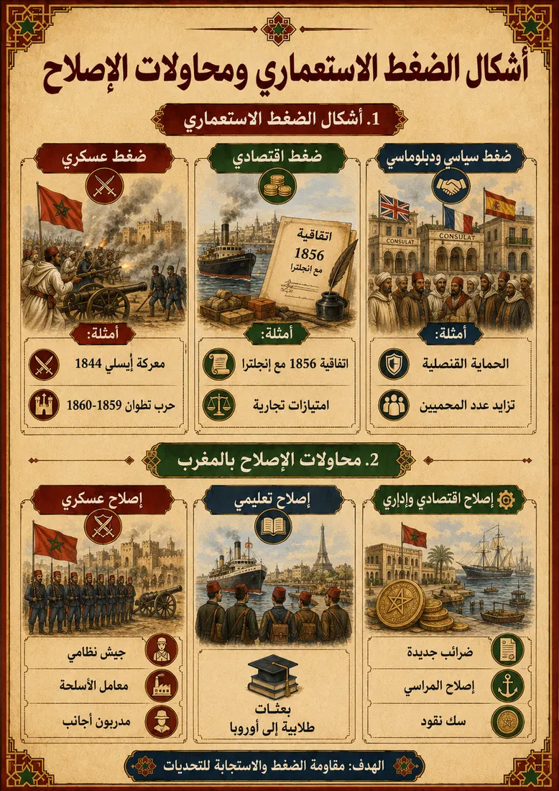

الضغط الاستعماري على المغرب
من هزيمة معركة إيسلي سنة 1844م، مروراً بمحاولات الإصلاح، وصولاً إلى فرض الحماية سنة 1912م: رحلة في سبع محطات تكتشف فيها كيف فقد المغرب استقلاله تدريجياً.
أتعرف أشكال الضغط الاستعماري على المغرب، وأفسر فشل الإصلاحات، وأفهم كيف أدى ذلك إلى فرض الحماية سنة 1912م.

مسار الرحلة: سبع محطات
اضغط على أي محطة لفتح بطاقتها: شرح قصير، نشاط، تغذية راجعة، ووسام.

محطة الانطلاق
اضغط على محطة من الأعلى لتبدأ. كل محطة تحكي جزءاً من قصة الضغط الاستعماري على المغرب.
الخط الزمني
اضغط على أي سنة لعرض الحدث ودلالته التاريخية.

من فشل الإصلاحات إلى فرض الحماية
مخطط يلخص كيف أدت العوامل الثلاثة إلى فقدان المغرب استقلاله.


خريطة الضغوط ومقارنة أشكال الإصلاح
خريطة مبسطة لمسارات الضغط، ومقارنة بين أشكال الضغط ومحاولات الإصلاح المقابلة لها.


بطاقات المفاهيم
اضغط على البطاقة لقلبها ومعرفة التعريف.

اختبار نهائي
أجب عن الأسئلة. النجاح بـ 70% فما فوق يفتح الشهادة.
السؤال 1 من 6
لوحة الأستاذ
تعديل سريع لبنك أسئلة الاختبار. يُحفظ محلياً على هذا الجهاز فقط.
تقرير الدرس القابل للطباعة
ملخص شامل يصلح للمراجعة أو التوزيع على التلاميذ.
1. تقديم الدرس
تعرض المغرب منذ القرن التاسع عشر لضغوط استعمارية متزايدة بسبب احتداد التنافس الإمبريالي الأوروبي، وضعف البنية العسكرية والمالية للدولة المغربية، وتوسع الامتيازات الأجنبية. بدأت هذه الضغوط تظهر بقوة بعد معركة إيسلي سنة 1844م، ثم تعمقت عبر معاهدة لالة مغنية والاتفاقيات التجارية والحماية القنصلية، قبل أن تنتهي بفرض نظام الحماية سنة 1912م.
2. إشكالية الدرس
- ما نوعية الضغوط الاستعمارية التي تعرض لها المغرب خلال القرن 19م؟
- كيف حاول المغرب مواجهة هذه الضغوط؟
- كيف أدى فشل الإصلاحات وتزايد التدخل الأوروبي إلى فرض الحماية سنة 1912م؟
3. المحور الأول: الضغط الاستعماري وتوقيع معاهدة لالة مغنية
دخل المغرب في مواجهة عسكرية مع فرنسا بسبب دعمه للأمير عبد القادر الجزائري، فانتهت المواجهة بهزيمة الجيش المغربي في معركة إيسلي يوم 14 غشت 1844م. وقد كشفت هذه الهزيمة ضعف الجيش المغربي مقارنة بالجيوش الأوروبية الحديثة.
بعد الهزيمة، وقع المغرب وفرنسا معاهدة لالة مغنية في 18 مارس 1845م لتسوية مسألة الحدود بين المغرب والجزائر المحتلة. وقد حددت المعاهدة جزءاً من الحدود الشمالية الشرقية، لكنها تركت المناطق الصحراوية الجنوبية الشرقية دون تحديد دقيق، مما خلق غموضاً استغلته فرنسا لاحقاً للتوسع.
4. المحور الثاني: أشكال التهافت الأوروبي ومحاولات الإصلاح
تعددت أشكال الضغط الأوروبي على المغرب:
| نوع الضغط | أمثلة |
|---|---|
| ضغط عسكري | معركة إيسلي 1844م، حرب تطوان 1859-1860م |
| ضغط اقتصادي | المعاهدة التجارية مع إنجلترا 1856م، الامتيازات التجارية، الديون |
| ضغط سياسي ودبلوماسي | الحماية القنصلية، تزايد عدد المحميين، التدخل في شؤون المغرب |
ولمواجهة هذه الأخطار، قام السلاطين بمحاولات إصلاح شملت عدة مجالات:
| مجال الإصلاح | أمثلة |
|---|---|
| عسكري | تكوين جيش نظامي، الاستعانة بمدربين أجانب، بناء معامل عسكرية |
| تعليمي | إرسال بعثات طلابية إلى أوروبا لاكتساب العلوم الحديثة |
| اقتصادي وإداري | فرض ضرائب جديدة، إصلاح المراسي، سك نقود جديدة |
5. المحور الثالث: فشل الإصلاحات وفرض الحماية
رغم أهمية الإصلاحات، فإنها فشلت بسبب:
- معارضة داخلية لبعض الإصلاحات، خاصة الضرائب الجديدة وبعض مظاهر التحديث.
- أزمة مالية وديون جعلت الدولة عاجزة عن تمويل الإصلاحات.
- ضغوط خارجية متزايدة فرضت على المغرب تقديم تنازلات جديدة.
ومع بداية القرن 20م، زاد التدخل الأوروبي، فانعقد مؤتمر الجزيرة الخضراء سنة 1906م الذي قيد السيادة المغربية، ومنح فرنسا وإسبانيا دوراً في تنظيم الأمن والمالية. ثم جاءت أزمة أكادير سنة 1911م لتزيد من نفوذ فرنسا بعد تخلي ألمانيا عن منافستها، لينتهي الأمر بتوقيع معاهدة الحماية يوم 30 مارس 1912م من طرف السلطان المولى عبد الحفيظ، وبذلك فقد المغرب استقلاله.
6. الخط الزمني المختصر
| السنة | الحدث | الدلالة |
|---|---|---|
| 1844 | معركة إيسلي | هزيمة الجيش المغربي أمام القوات الفرنسية. |
| 1845 | معاهدة لالة مغنية | تسوية مسألة الحدود بين المغرب والجزائر المحتلة مع ترك الغموض في الجنوب الشرقي. |
| 1856 | المعاهدة التجارية مع إنجلترا | توسيع الامتيازات التجارية الأوروبية بالمغرب. |
| 1859-1860 | حرب تطوان | هزيمة المغرب أمام إسبانيا واحتلال تطوان مؤقتاً مع فرض تعويضات ثقيلة. |
| 1863 | اتفاقية الحمايات مع فرنسا | توسيع نظام الحماية القنصلية وتزايد عدد المحميين. |
| 1906 | مؤتمر الجزيرة الخضراء | تدويل القضية المغربية وتقييد السيادة المغربية. |
| 30 مارس 1912 | فرض الحماية | توقيع معاهدة الحماية وفقدان المغرب استقلاله. |
7. مصطلحات ومفاهيم
- المخزن: السلطات المغربية.
- الحماية: نظام استعماري يحتفظ فيه البلد الخاضع للحماية بمؤسساته، لكنها تخضع لمراقبة الدولة الحامية.
- معركة إيسلي: معركة دارت يوم 14 غشت 1844م بين المغرب وفرنسا وانتهت بهزيمة الجيش المغربي.
- معاهدة لالة مغنية: اتفاقية وقعت يوم 18 مارس 1845م بين المغرب وفرنسا لتعيين الحدود بين المغرب والجزائر المحتلة.
- حرب تطوان: حرب دارت بين المغرب وإسبانيا بين 1859 و1860م وانتهت بهزيمة المغرب واحتلال تطوان مؤقتاً.
- مؤتمر الجزيرة الخضراء: مؤتمر انعقد سنة 1906م بإسبانيا وقيد السيادة المغربية ووسع التدخل الأجنبي.
- المحميون: أشخاص يتمتعون بحماية قنصلية أجنبية ولا يؤدون بعض الضرائب.
8. خلاصة مركزة
يمثل الضغط الاستعماري على المغرب نتيجة مباشرة للتنافس الإمبريالي الأوروبي وضعف الدولة المغربية خلال القرن 19م. فقد كشفت الهزائم العسكرية والاتفاقيات التجارية والحماية القنصلية هشاشة أوضاع المغرب، فحاول السلاطين القيام بإصلاحات عسكرية وتعليمية واقتصادية. غير أن المعارضة الداخلية والأزمة المالية والضغوط الخارجية أدت إلى فشل هذه الإصلاحات، فتم تدويل القضية المغربية في مؤتمر الجزيرة الخضراء، ثم فرضت الحماية سنة 1912م.
9. تقويم التعلمات
- أشرح معنى الحماية القنصلية.
- أحدد نتائج معركة إيسلي على المغرب.
- أصنف أشكال الضغط الأوروبي على المغرب.
- أذكر مجالين من مجالات الإصلاح المغربي.
- أبين أسباب فشل الإصلاحات المغربية.
- أكتب فقرة قصيرة أفسر فيها كيف انتقل المغرب من الضغط الاستعماري إلى فقدان الاستقلال.